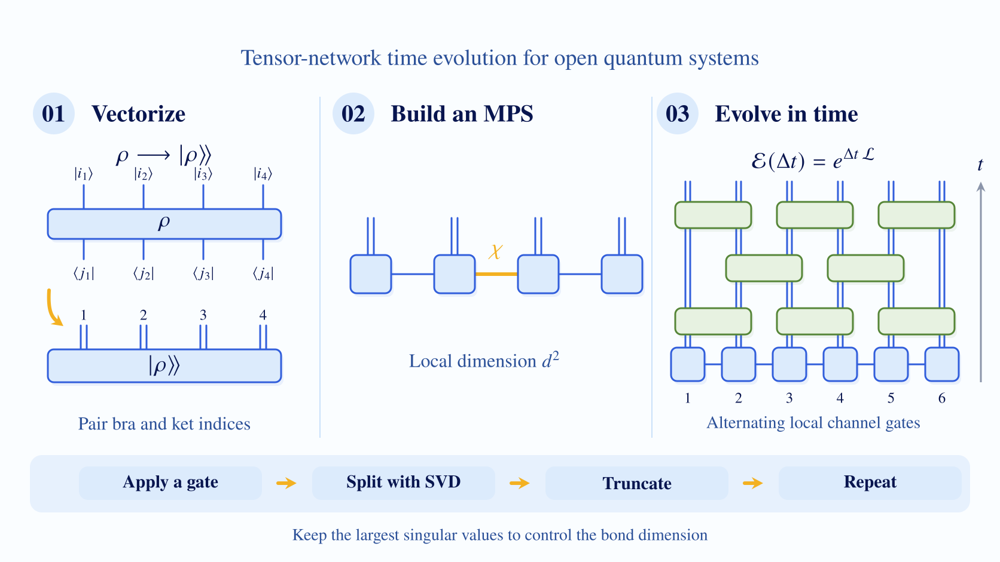

To follow the dynamics of an open quantum many-body system, I vectorize its density matrix and represent it as a
matrix product state (MPS). I then evolve this state with local quantum-channel gates using time-evolving block
decimation (TEBD).

From a density matrix to tensor-network time evolution. Blue tensors represent the state; green gates implement
local evolution. View the full-size SVG →
Vectorize the density matrix
Pair the bra and ket indices at each site, giving an effective local dimension of \(d^2\).
Build a matrix product state
Store the vectorized state as a chain of local tensors. The bond dimension \(\chi\) controls the size of the representation.
Evolve and truncate
Apply alternating layers of local gates. After each gate, use a singular value decomposition (SVD) and retain the largest singular values.
Also known as the quantum trajectory method, this approach samples Lindblad dynamics with an ensemble of
pure states. I use it to study interacting open systems with particle loss and gain.
Independent jump histories combine into Lindblad dynamics. Blue paths show smooth evolution between
the warm red quantum jumps. Schematic illustration, based on my DQPT paper's supplemental method.
View the full-size SVG →
Prepare the ensemble
Start \(M\) trajectories from the same state. In my DQPT calculation, this is the half-filled ground state before the quench.
Sample and normalize
Compute the no-jump and jump probabilities at each small time step. Sample one outcome, apply its operator, normalize, and repeat.
Average the trajectories
Estimate observables from the ensemble. For the DQPT signal, average the squared overlaps with the initial state.
A mixed quantum state can carry long-range order that ordinary correlations miss. Strong-to-weak spontaneous
symmetry breaking (SWSSB) reveals this order through nonlinear quantities such as the Rényi-2 correlator.
In the pair-dephasing example, the same mixed state has no ordinary \(Z\)-spin correlation but does have
long-range nonlinear order. Panel 00 introduces strong and weak symmetry:
a fixed global charge sector versus a mixture of sectors. Panel 01 then illustrates global SWSSB through
whole-state nonlinear correlations: one spin flip changes the ensemble, while two distant flips preserve it.
Its nonlinear view reveals the order by Bell postselection on the environments of two purified copies.
The local SWSSB view asks a different question: apply a charge-changing flip inside a local window,
then ask whether that window
can detect the change. The product-state reference reveals it; the fully scrambled SWSSB state hides it
in global correlations. The waterfall then follows the spreading order.
What SWSSB means, how its nonlinear order spreads, and how symmetry controls the growth rate.
Panel 00 defines symmetry for a finite mixed state using \(Q=\prod_jX_j\):
strong symmetry has \(Q\rho_{\mathrm s}=q\rho_{\mathrm s}\) with one definite charge,
whereas weak symmetry requires \(Q\rho_{\mathrm w}Q^\dagger=\rho_{\mathrm w}\).
The weak-only example mixes charge sectors. Each framed row is an \(X\)-basis ensemble component,
and its charge is the product of the displayed signs. A fixed-charge state can still develop
SWSSB through its thermodynamic-limit nonlinear correlations.
Panel 01's first block is global SWSSB: separate shot cards show independent
measurements of fresh copies of the same 1D state. The nonlinear view follows
Sala, Gopalakrishnan, Oshikawa and You, Phys. Rev. B 110, 155150 (2024)
(arXiv:2405.02402, Section III.1 and Appendix A):
start with \(\rho=\operatorname{Tr}_E\lvert\Psi\rangle\langle\Psi\rvert\), duplicate the purification
as \(\lvert\Psi\rangle\otimes\lvert\Psi^*\rangle\), and postselect every environment pair into
\(\lvert\Phi^+\rangle=(\lvert00\rangle+\lvert11\rangle)/\sqrt2\).
The normalized remaining system state is \(\lvert\rho\rangle\!\rangle/\sqrt{\operatorname{Tr}\rho^2}\).
Its paired operators \(O_i=Z_i^{(1)}Z_i^{(2)}\) obey \(\langle O_iO_j\rangle_{\mathrm{post}}=R_2(i,j)\).
In this exact example, both the Rényi-2 and global fidelity correlators detect the hidden order;
they are distinct diagnostics in general. Its local SWSSB block applies the same local
charge flip in an unbroken product-state reference and a fully scrambled SWSSB state. In the local formulation, the fidelity
\(F_A=F(\rho_A,\sigma_A)\) tends to zero in an unbroken strong phase and stays nonzero in local SWSSB
as the window around the flip grows. The illustration shows the exact limiting values zero and one.
The nested-set diagram shows that, for fidelity-based definitions, local SWSSB is necessary but not
sufficient for global SWSSB. Locally thermal pure ETH states without ordinary symmetry breaking
provide a local-only example, as discussed in
Theorem II.1 and Section II.3.
The measurement snapshots, purification construction, and patch diagrams are schematic; the waterfall profiles
are calculated from the pair-dephasing example in Appendix A.
View the full-size SVG →
Find the hidden order
In the pair-dephasing example, the Rényi-2 correlation range grows while ordinary correlations between separated \(Z\) spins stay zero.
Follow the symmetry
We find exponential growth for \(\mathbb{Z}_2\), including gapless models, and algebraic growth for \(U(1)\): near ballistic at finite filling, diffusive in the single-particle or single-hole limit.
Reach across a finite chain
The effective onset occurs when \(\xi_{R_2}\sim L\). In an infinite chain, true long-range order appears only asymptotically.
In our reciprocal two-dimensional non-Hermitian lattice, one very weak defect barely changes the
spectrum. Add a second, equally weak defect far away, and new eigenstates can appear far from the
original spectrum. Our work traces this strong response to propagation between two distant sites.
The effect depends on the system's geometry and the placement of the defects. In a sensitive regime,
increasing their separation makes the response stronger, so arbitrarily weak defects can become
nonperturbative as the system grows.
From weak local defects to a nonlocal spectral response. The spectrum points are computed on a
\(40\times40\) cylinder with \(t_x=i\), \(t_y=0\), \(t_{xy}=3\), \(u=-2i\), and two possible
onsite defects of strength \(V=0.01\) at \((0,0)\) and \((39,0)\). Gold points highlight
induced states separated from the original spectrum. The cylinder drawings, propagation paths,
and wavepacket revivals are schematic. The dynamical illustration represents repeated scattering
through a channel with slow decay.
View the full-size SVG →
The Green function measures the response at site \(i\) to a source at site \(j\), evaluated at an
energy outside the unperturbed spectrum. Its product in both directions is the forth-back propagator:
For equal defect strengths \(V\), the nonlocal response scale is
\(|V|\sqrt{|\mathcal P_{\leftrightarrow}(E)|}\). A growing round trip can overwhelm the smallness of
each defect; propagation in both directions determines the effect.
Separate the defects
In a sensitive geometry, the round-trip response grows exponentially with distance and the perturbative threshold tends to zero.
Choose the geometry
The cylinder is open along \(x\) and periodic along \(y\). Its aspect ratio \(\alpha=L_x/L_y\) and defect offset \(g=\Delta y/L_x\) control the sensitivity.
Watch the wave return
The defects create nonlocal bound states. In the dynamical example, repeated scattering sends a wavepacket back through the bulk with slow decay.
![Quantum trajectory method: prepare M copies of an initial pure state; at each time step, sample no-jump evolution under the effective Hamiltonian or a jump operator, then normalize. Probabilities p0 and pμ sit above the matching outcomes. Three schematic blue wavefunction paths evolve smoothly between abrupt quantum jumps drawn as warm red vertical arrows. Average the resulting pure-state projectors to estimate the density matrix. Jump probabilities are pμ = Δt⟨ψ|Lμ†Lμ|ψ⟩ and p0 = 1 − ∑μ pμ. The paths do not plot wavefunction norms or simulation data.](assets/img/quantum-trajectories.svg?v=red-jumps-3)
![An introductory visual story of SWSSB. Panel 00 contrasts strong symmetry with one definite charge and weak-only symmetry mixing charge sectors. Panel 01 compares independent Z-measurement shots with a purification construction: blue system sites and gold environment ancillas form two separately framed copies, the second complex conjugated. Green Bell-state projection bridges pair every corresponding environment ancilla. After postselection, correlations of paired system operators reveal long-range Rényi-2 order. The figure cites Sala, Gopalakrishnan, Oshikawa and You on the purification perspective. The local SWSSB view compares charge detectability within a patch, with citations including Jong Yeon Lee on charge scrambling. A nested-set diagram places global inside local fidelity SWSSB. The half-transparent waterfall shows nonlinear correlation profiles spreading with time; the final comparison shows exponential Z2 and algebraic U(1) growth.](assets/img/swssb.svg?v=purification-view-13)